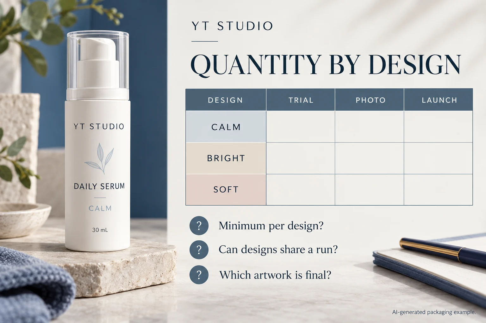

Start with the real packaging, not only the logo
Most early label problems come from missing bottle information. Before requesting a quote, send a front photo, side photo, bottle diameter, label width, label height and quantity per design. This helps confirm whether the project needs a front label, back label, wraparound label, jar lid label or custom die cut shape.
What low MOQ is useful for
Test packaging for serum, toner, facial oil, cream jars and small-batch skincare sets.
Ask whether selected designs can share a confirmed construction and production arrangement. Keep the quantity and artwork status of each design visible.
Check logo size, ingredient panels, barcode placement and color balance before committing to bulk production.
Choose material by bottle surface
Review opaque, clear and protected constructions against the actual bottle and proposed use. Describe the required matte, gloss or decorative appearance separately, then ask the printer which specific materials, finish and evidence the proposal includes.
Low MOQ does not mean ignoring production details
Even for a small first order, confirm roll or sheet format, corner radius, gap, label direction and surface curve. If the label will later move to an applicator or packaging line, share that requirement early so the same structure can scale smoothly.
Quote checklist for small cosmetic brands
- Product type: serum, cream, lotion, toner, oil, tube or jar
- Bottle or jar photo with basic dimensions
- Label width, height and shape if already known
- Quantity per design and number of designs
- Material preference: clear, white, matte, gloss, foil or waterproof
- Artwork file, logo file or reference style
For product examples, browse our custom cosmetic labels. If you are still choosing material, compare the waterproof label material guide before sending your artwork.
Separate trial, photography and first-sale quantities
In a public skincare startup question, a maker was testing eight fragrances but expected to keep four. A minimum of fifty labels for each proposed design would mean four hundred labels before that choice was made. Those are one person's planning numbers, not an industry minimum or a YT offer. They show why one total quantity can hide the decision.
A stable three-product range and eight undecided trial variants need different order conversations. The stable range may be ready for a confirmed production quote. The trial project may benefit from a limited presentation route, delaying undecided designs or printing in-house if that already meets its requirements. A lower headline minimum does not settle quality, labor, unused stock or the next artwork change.
| Field for each SKU | Enter before asking for a quote | Confirm with the printer |
|---|---|---|
| Design and components | Variant name; front, back or lid components; artwork revision | Which separate designs or components count toward a minimum? |
| Trial demand | Physical samples needed now and whether their copy is final | What representative sample route is available, with what cost and scope? |
| Photography demand | Photo-ready packs and any separate presentation version | Is the quoted appearance representative of the later production job? |
| First-sale demand | Units by design, required date and destination | Minimum per design or order; permitted shared-run conditions |
| Pending decisions | Unselected variants, copy changes and finish choices | Which changes require a revised price, setup or schedule? |

Ask what the minimum actually applies to
Do not write “can you combine designs?” without describing the designs. Send their dimensions, proposed construction and finish, artwork status, quantities and supply format. Ask whether the minimum is per artwork, size, material arrangement, production run or complete order. The answer is project-specific; shared dimensions do not prove that arbitrary versions can be combined.
Once the printer confirms the conditions, enter the proposed order quantity beside the current need for each design. The difference is stock beyond this stage, not automatically wasted stock: a settled design may be useful later, while an unselected fragrance or unapproved statement may not be. Keep that distinction visible rather than averaging it away across the range.
For separate front and back labels, count complete usable sets. Extra fronts cannot cover missing backs. Keep the quantities per component in the inquiry and use the quantity-variance guide for delivery tolerances; that separate issue does not answer the minimum-order question.
Make the next decision without guessing the missing price
Compare only confirmed combinations. One route may reduce cash committed to undecided variants; another may reduce repeated setup and ordering work for a stable range. Record what the quotation includes, any artwork-change condition and the requested date. Use the digital-versus-flexo quotation review if the supplier proposes different production routes, rather than assuming the process name determines value.
If the minimum or shared-run condition is still unknown, mark the affected design pending. Do not calculate a guaranteed saving from an assumed rule. For custom cosmetic labels, prepare the completed design schedule, container photos, dimensions, stable and pending artwork, and destination through the project inquiry form. Send artwork separately in email or WhatsApp and ask which arrangement can actually be quoted.
Buyer FAQ
What should a small beauty brand prepare before ordering low MOQ cosmetic labels?
Prepare the bottle photo, label size, quantity per design, artwork file or logo, material preference, finish preference and shipping country before asking for a quote.
What minimum applies to my designs?
Ask for the minimum per design or confirmed production arrangement, together with size, material, finish, supply format and any shared-run conditions. No single minimum in this guide is a confirmed offer for your project.
Ready to quote low MOQ cosmetic labels?
Prepare the quantity-by-design schedule, bottle photos, label dimensions, artwork status and destination. Ask which combinations, sample options and quotation conditions can be confirmed.
Send Cosmetic Label Details